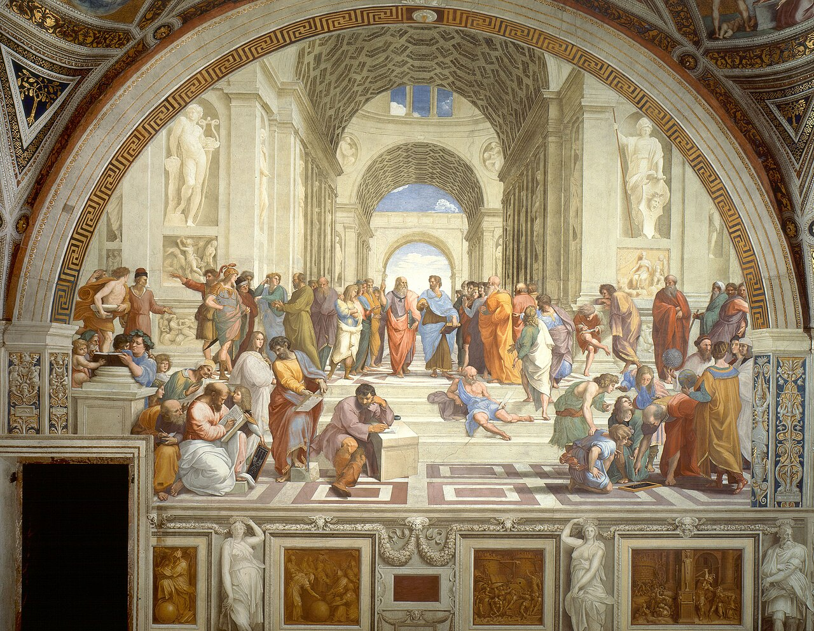

Amor a la sabiduría
No se trata de acumular datos, sino de preguntar por el sentido y los fundamentos de lo que creemos saber.
Universidad Estatal de Bolívar · Introducción a la Filosofía
El amor por la sabiduría
Una invitación a pensar con rigor: comprender qué es la filosofía, cuáles son sus pilares y cómo las grandes corrientes han intentado responder a las preguntas que acompañan a la humanidad desde sus orígenes.

01 Definición
La filosofía es la disciplina que busca comprender los fundamentos de la realidad, del conocimiento y de la conducta humana mediante el razonamiento crítico.
La filosofía nace en la Grecia antigua, hacia el siglo VI a. C., cuando el pensamiento deja de explicar el mundo únicamente mediante los mitos y comienza a hacerlo con razones. Desde entonces, su tarea ha sido preguntar por aquello que otras disciplinas dan por sentado.
Se distingue de la ciencia porque no se limita a un objeto de estudio ni a un método experimental. Se pregunta por los supuestos del conocimiento, por el sentido de la existencia y por los criterios con los que juzgamos lo justo, lo verdadero y lo bello. Sus respuestas no son definitivas: son argumentos abiertos a la crítica y al diálogo.
«La filosofía no es una doctrina, sino una actividad.» Ludwig Wittgenstein, Tractatus logico-philosophicus
No se trata de acumular datos, sino de preguntar por el sentido y los fundamentos de lo que creemos saber.
Examina ideas, cuestiona supuestos y distingue los argumentos válidos de las opiniones y las falacias.
Aborda las preguntas últimas: la existencia, la verdad, la libertad, la justicia y el bien.
02 Fundamentos
Todo ejercicio filosófico se apoya en unas pocas actitudes y herramientas intelectuales. Son las bases que permiten pensar con rigor y no solo opinar.
La filosofía comienza cuando algo cotidiano deja de parecer obvio. Los griegos llamaron thaumazein a ese asombro ante el mundo, origen de toda pregunta.
Consiste en suspender provisionalmente las creencias y examinarlas con cuidado. No es negarlo todo, sino no aceptar nada sin razones. Descartes hizo de ella un método.
Filosofar es dar razones: construir argumentos, analizar premisas y conclusiones y detectar falacias. La validez del razonamiento importa tanto como la conclusión.
Las preguntas filosóficas no admiten respuestas rápidas. Se busca la verdad con humildad intelectual, sabiendo que toda conclusión puede revisarse.
Estudia lo que existe: el ser, la realidad, el tiempo, la causalidad y la libertad.
Examina el conocimiento: qué es, cómo se justifica y cuáles son sus límites.
Reflexiona sobre la conducta: el bien, el deber, la virtud y la vida buena.
Analiza la estructura del razonamiento para distinguir los argumentos válidos de los inválidos.
Se ocupa de la belleza, el arte y la experiencia estética.
Investiga el poder, la justicia, la autoridad y la organización de la vida en común.
03 Corrientes
Cada época ha respondido de manera distinta a las mismas preguntas. Estas seis corrientes ofrecen un mapa de la historia del pensamiento occidental y de sus autores más influyentes.
Siglos XVII–XVIII · Europa moderna
Confía en la razón como fuente principal del conocimiento. Sostiene que existen ideas innatas y que el modelo del saber es la matemática: a partir de principios evidentes se deduce, paso a paso, la verdad.
René Descartes 1596–1650
Dudó de todo para hallar un principio indudable y concluyó: «Pienso, luego existo».
Baruch Spinoza 1632–1677
Construyó una ética con método geométrico y defendió que Dios y la naturaleza son una misma realidad.
Gottfried Leibniz 1646–1716
Explicó el universo como una armonía de mónadas y sostuvo que vivimos en el mejor de los mundos posibles.
Siglos XVII–XVIII · Islas Británicas
Considera que todo conocimiento procede de la experiencia sensible. La mente es al nacer como una hoja en blanco que se llena con impresiones; por eso desconfía de las ideas innatas y del alcance de la razón pura.
John Locke 1632–1704
Comparó la mente con una hoja en blanco y fundó el empirismo moderno en su Ensayo sobre el entendimiento humano.
George Berkeley 1685–1753
Llevó el empirismo al idealismo: afirmó que ser es ser percibido (esse est percipi).
David Hume 1711–1776
Mostró que la causalidad no deriva de la razón sino de la costumbre, y llevó el empirismo a un escepticismo moderado.
Siglos XVIII–XIX · Alemania
Sostiene que la realidad no se conoce «tal como es en sí», sino a través de las estructuras de la mente o del espíritu. El sujeto no es un espejo pasivo: organiza activamente lo que conoce.
Immanuel Kant 1724–1804
Revolucionó la filosofía al mostrar que la mente impone formas a la experiencia y al estudiar los límites del conocimiento.
J. G. Fichte 1762–1814
Partió del «yo absoluto» para explicar la realidad como actividad libre y creadora del sujeto.
G. W. F. Hegel 1770–1831
Desarrolló una dialéctica de la historia y concibió la realidad como un proceso racional hacia el saber absoluto.
Siglos XIX–XX · Europa
Pone el foco en la existencia concreta de cada persona, en su libertad y en la responsabilidad de elegir. No hay una esencia previa que determine quién somos: nos hacemos al actuar.
Søren Kierkegaard 1813–1855
Precursor del movimiento, exploró los estadios estético, ético y religioso de la existencia y el papel de la fe.
Martin Heidegger 1889–1976
Analizó el ser humano como Dasein: un existente arrojado al mundo y orientado hacia la muerte.
Jean-Paul Sartre 1905–1980
Defendió la libertad radical y describió la «mala fe» como una forma de huir de la propia responsabilidad.
Albert Camus 1913–1960
Aunque rechazaba la etiqueta de existencialista, abordó el absurdo y la rebelión en El mito de Sísifo.
Siglos III a. C.–II d. C. · Grecia y Roma
Enseña a vivir conforme a la naturaleza y a la razón. Su objetivo es la felicidad entendida como virtud y serenidad interior, alcanzable solo si distinguimos lo que depende de nosotros de lo que no.
Zenón de Citio 334–262 a. C.
Fundador de la escuela, reunió a sus discípulos en el pórtico (stoa) de Atenas.
Epicteto 50–135 d. C.
Esclavo liberado y maestro de la dicotomía del control: el juicio depende de nosotros, los acontecimientos no.
Séneca 4 a. C.–65 d. C.
Escribió sobre el tiempo, la serenidad y la brevedad de la vida en sus Cartas a Lucilio.
Marco Aurelio 121–180 d. C.
Emperador y filósofo, dejó en las Meditaciones un diario de autodisciplina y deber moral.
Siglo XX · Reino Unido, Austria y Alemania
Nace a comienzos del siglo XX con la lógica moderna. Su rasgo distintivo es la claridad: antes que grandes sistemas, analiza con precisión el lenguaje, los conceptos y los argumentos.
Gottlob Frege 1848–1925
Fundó la lógica moderna y distinguió el sentido de la referencia en el lenguaje.
Bertrand Russell 1872–1970
Impulsó el atomismo lógico y la filosofía del lenguaje; coescribió los Principia Mathematica.
Ludwig Wittgenstein 1889–1951
Pasó del análisis lógico del Tractatus a los «juegos de lenguaje» de las Investigaciones filosóficas.